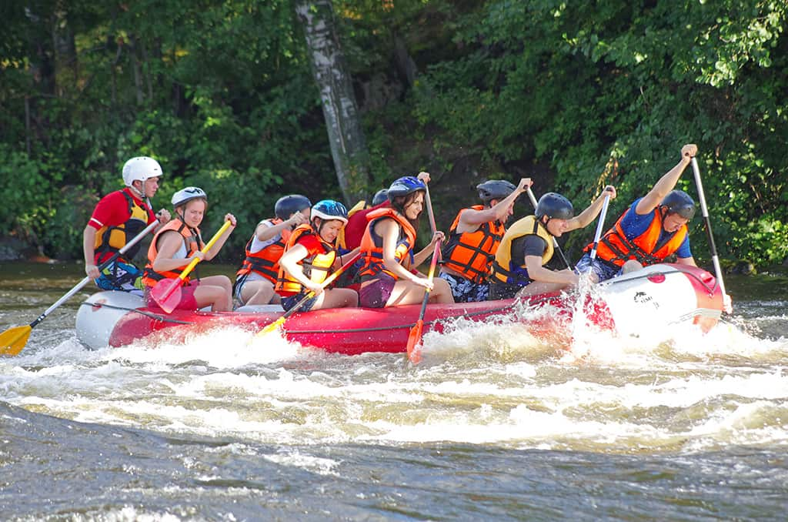
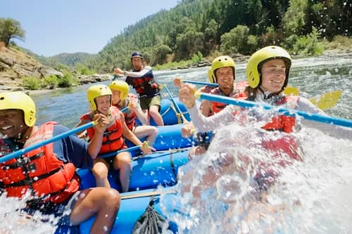
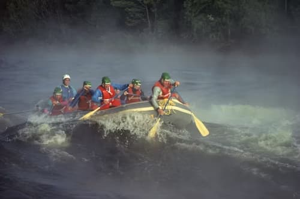
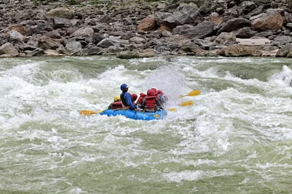

Rapids Rafting Adventures
| River | Guide | Times | Trip Length |
|---|---|---|---|
| Snake Rapids | Mike | 8am-10am | 2 hours |
| Mike | 1pm-3pm | 2 hours | |
| Devils Lair | Grace | 10am-12pm | 2 hours |
| Grace | 3pm-5pm | 2 hours | |
| White Rapids | Scott | 9:30am-11am | 1 1/2 hours |
| Scott | 2:30pm-4pm | 1 1/2 hours | |
| Weekly Info | |||

Snake rapids is a fun trip for all skill levels. This winding river with plenty of rapids to enjoy are sure to bring a smile to your face. This is a 10 mile course and will include one stop to relax and have a snack.

Devils lair is for those who are a little more experienced and love a challenge. This will fill you with tons of adrenaline and will keep you at the edge of your seat. This is our long time Guide Grace's favorite trip and she will make it a blast!

White rapids is a great one for beginners. plenty of rapids to enjoy but also some more calm parts where you can sit back and just enjoy the beautiful scenery around you. There are a few stops to get off, have a snack, and walk around a bit before getting back in the water.